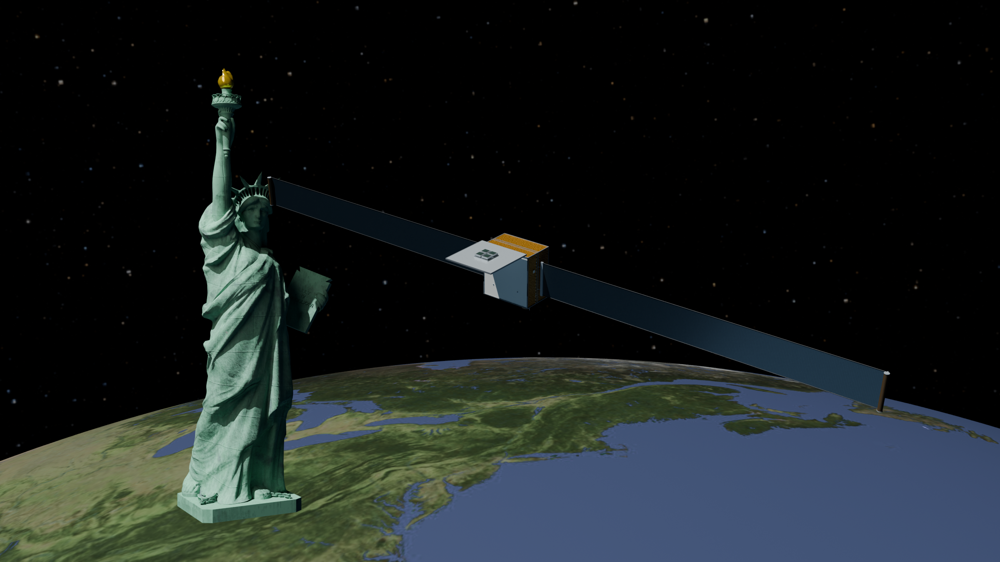
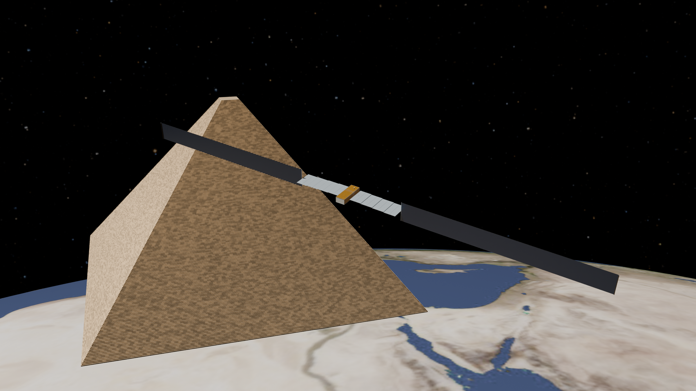
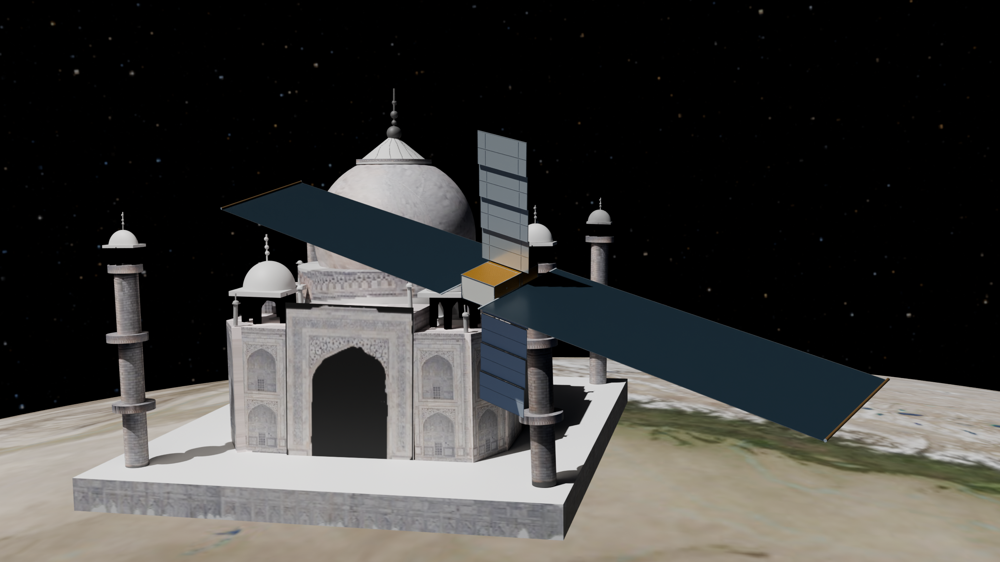
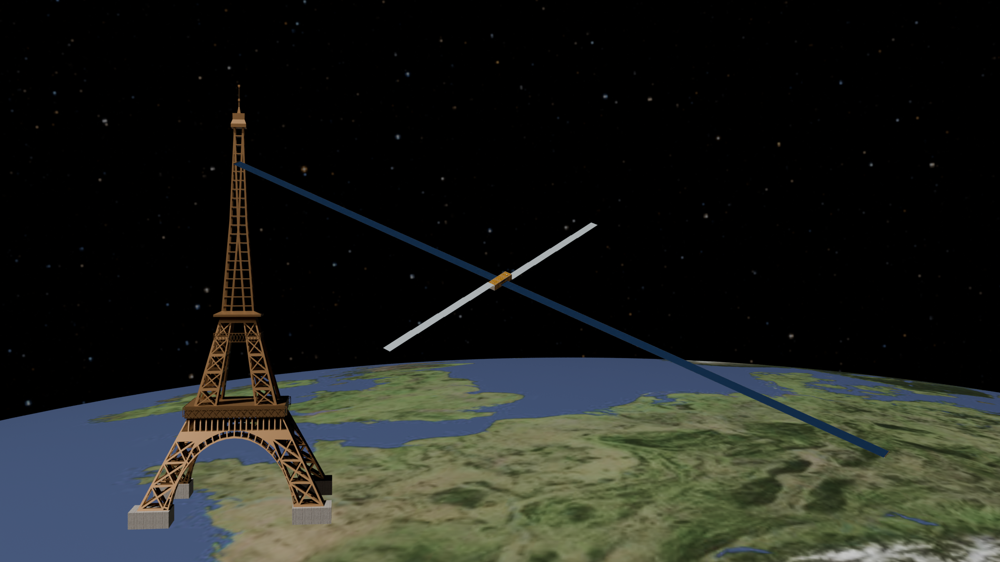
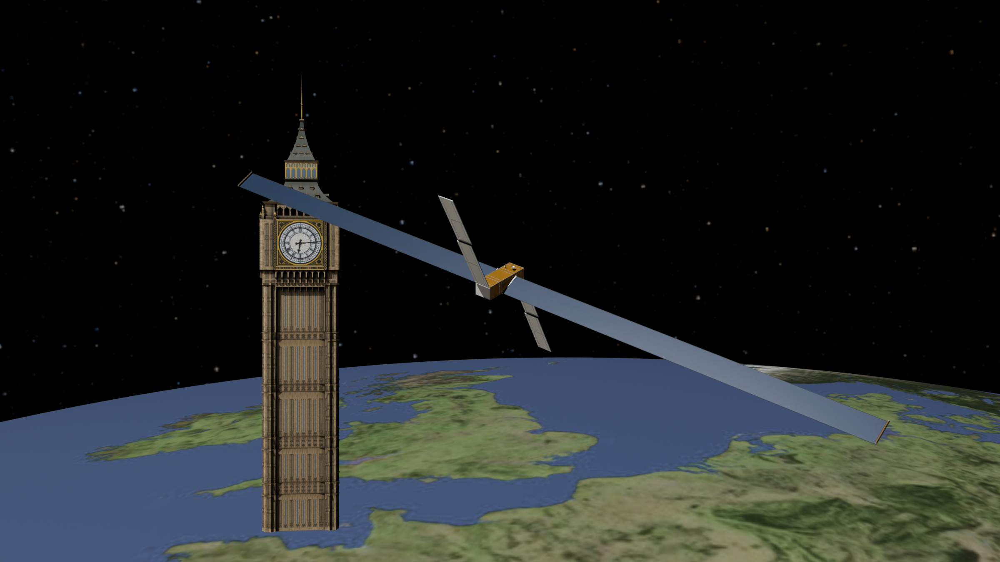
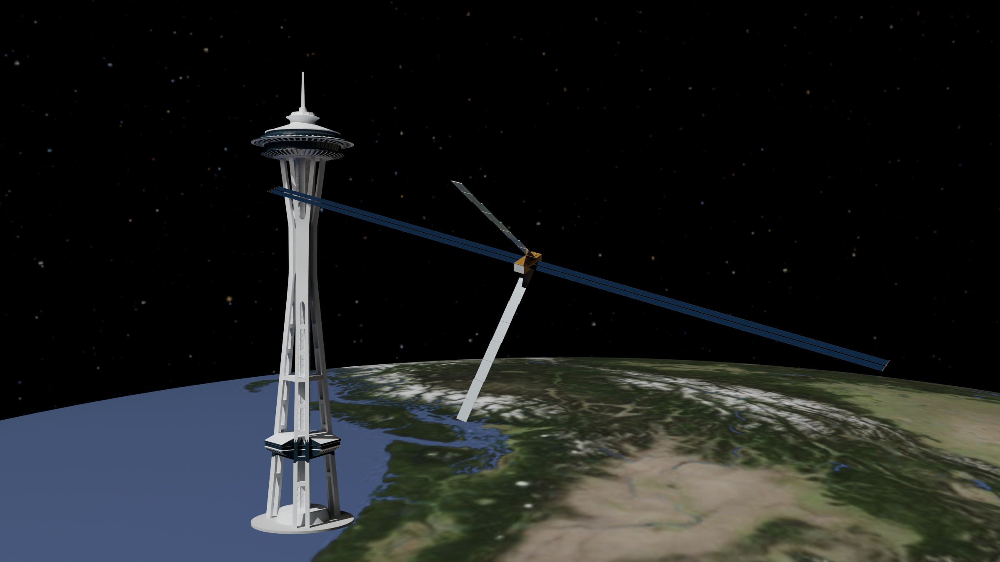

<!DOCTYPE html>
<html lang="en"><meta charset="utf-8"/><title>Publically Disclosed Orbital Data Center Plans</title><style>@font-face{font-family:Inter;src:url('fonts/Inter-SemiBold.otf');font-weight:600}*{box-sizing:border-box}html,body{margin:0;width:2000px;height:2500px;background:#0b1119;color:#eff4f8;font-family:Inter,Arial,sans-serif;font-weight:600}body{padding:44px;display:grid;grid-template-rows:190px minmax(0,1fr) 156px;gap:20px}header h1{font-size:91px;line-height:1.04;letter-spacing:-2.8px;margin:0}header h1 span{color:#f5b566}header p{font-size:33px;line-height:1.2;margin:14px 0 0;color:#bfccd6}.grid{min-height:0;display:grid;grid-template-columns:1fr 1fr;grid-template-rows:repeat(3,minmax(0,1fr));gap:20px}article{min-width:0;min-height:0;background:#192633;border:1px solid #40576b;border-radius:16px;overflow:hidden;display:flex;flex-direction:column}.frame{position:relative;aspect-ratio:16/9;flex:none;min-height:0;background:#000}.comparison{display:block;width:100%;height:100%;object-fit:cover}.logo{position:absolute;right:28px;top:24px;width:420px;height:100px;object-fit:contain;object-position:right center;filter:drop-shadow(0 3px 6px #000)}.caption{height:128px;flex:none;padding:12px 22px;border-top:1px solid #34495b}h2{font-size:52px;line-height:1.15;letter-spacing:-.8px;margin:0 0 6px}.sizes{display:flex;justify-content:space-between;gap:12px;white-space:nowrap;font-size:34px;line-height:1.1;color:#b9c7d4}.sizes span:first-child b{color:#f4bf7e}.sizes span:last-child b{color:#f5f7fa}footer{border-radius:16px;background:#f5b566;color:#111b27;display:flex;align-items:center;justify-content:space-between;padding:20px 30px}footer p{font-size:37px;line-height:1.13;margin:0}footer a{font-size:60px;letter-spacing:-1.8px;color:inherit;text-decoration:none;white-space:nowrap}</style><header><h1>Publically Disclosed<br/><span>Orbital Data Center Plans</span></h1></header><main class="grid"><article><div class="frame"></div><div class="caption"><h2>8 kW Compute Node</h2><div class="sizes"><span><b>Statue of Liberty</b> · 46 m high</span><span>Span · <b>44 m</b></span></div></div></article><article><div class="frame"></div><div class="caption"><h2>Starcloud-3</h2><div class="sizes"><span><b>Great Pyramid</b> · 230 m base</span><span>Span · <b>239 m</b></span></div></div></article><article><div class="frame"></div><div class="caption"><h2>Starmind AI1</h2><div class="sizes"><span><b>Taj Mahal</b> · 73 m high</span><span>Span · <b>75 m</b></span></div></div></article><article><div class="frame"></div><div class="caption"><h2>Orbital-1 / Reflex</h2><div class="sizes"><span><b>Eiffel Tower (2019)</b> · 324 m high</span><span>Span · <b>352 m</b></span></div></div></article><article><div class="frame"></div><div class="caption"><h2>June 2026 Reference</h2><div class="sizes"><span><b>Big Ben</b> · 96 m high</span><span>Span · <b>100 m</b></span></div></div></article><article><div class="frame"></div><div class="caption"><h2>Self-Powered Node Study</h2><div class="sizes"><span><b>Space Needle</b> · 184 m high</span><span>Span · <b>214 m</b></span></div></div></article></main><footer><p>Explore the design of<br/>orbital data centers</p><a href="http://orbitaldatacenter.design">http://orbitaldatacenter.design ↗</a></footer></html>